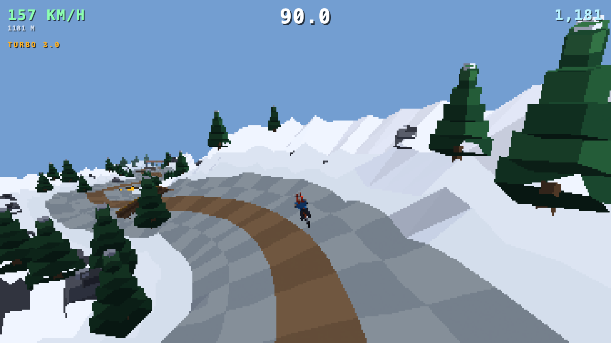
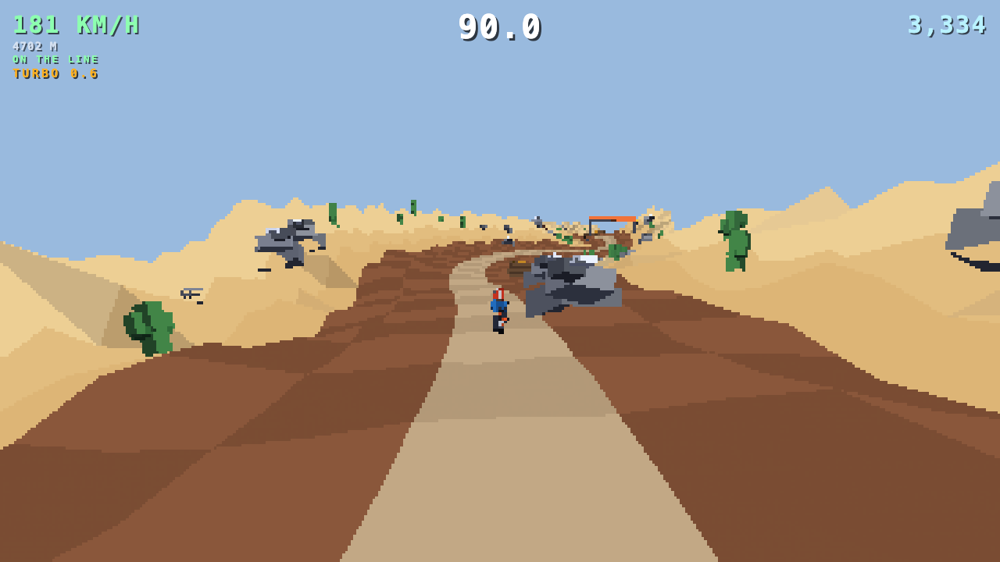
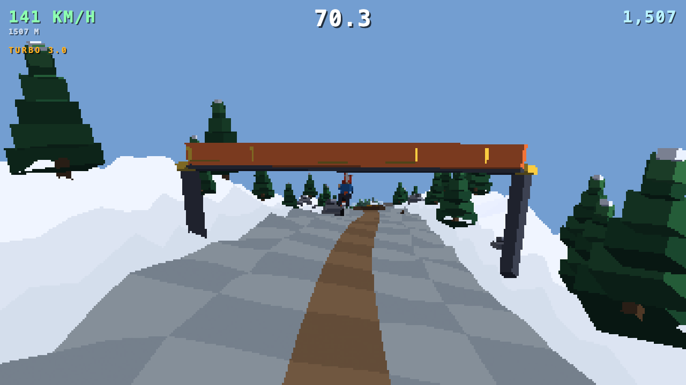
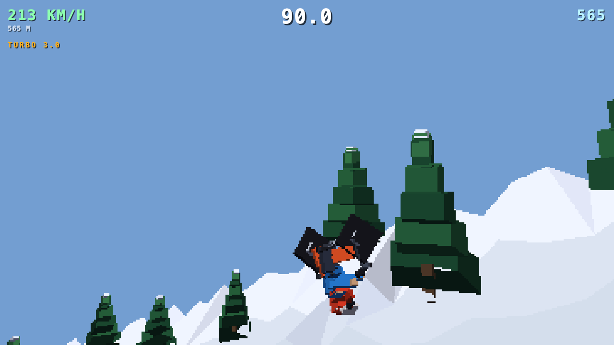
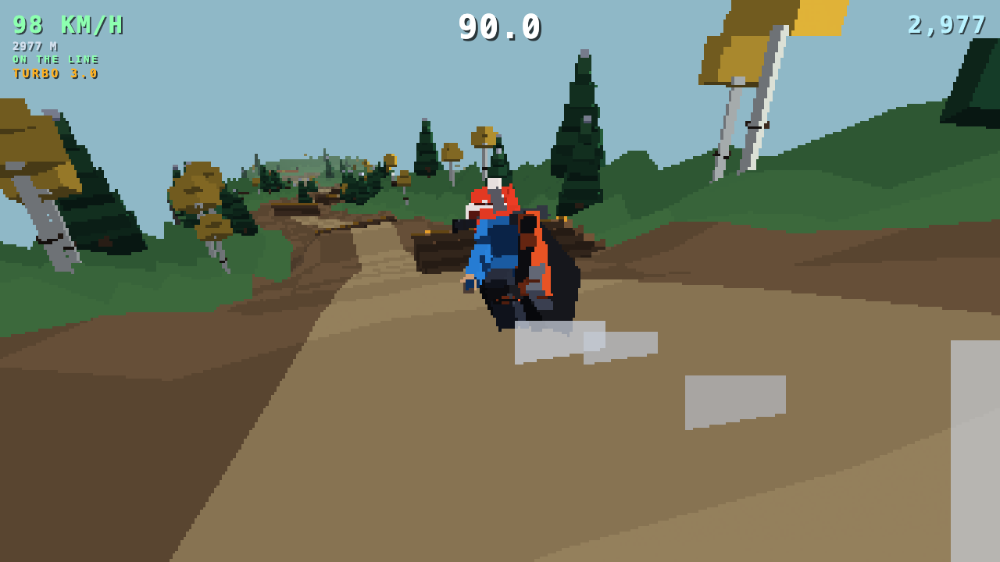
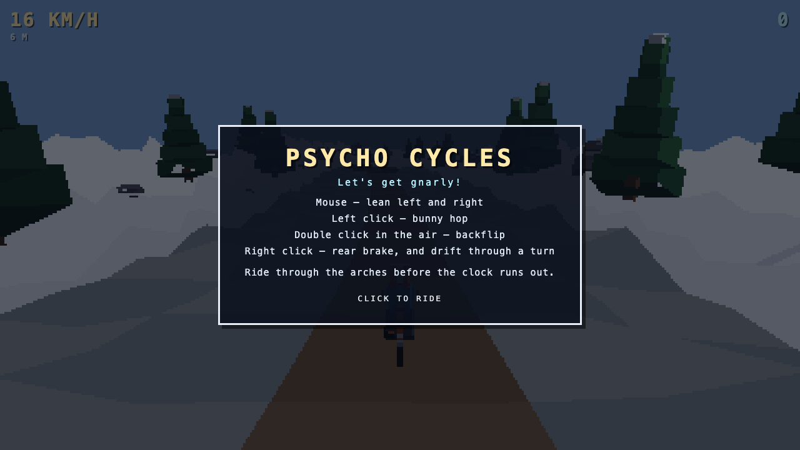

Endless Downhill Racing
Bomb your bike down an endless procedural mountain. Lean into turns, catch big air, and blast through checkpoints before the clock runs out.

Endless Mountain
Every run generates a brand new mountain, carrying you from snowy alpine peaks through pine forest down into sun-baked desert canyon. No two descents look the same.

Race the Clock
Ride through checkpoints before the timer runs out to keep your run alive. Miss one and the mountain wins.

Catch Air
Bunny hop off every bump and double-click in the air to throw a backflip. Chain tricks together to build your combo and rack up score.

Go Fast
Hold both buttons to tuck into an aerodynamic crouch for a burst of speed, then feather the rear brake to drift your bike through the tightest turns.


Mouse to lean, click to hop, double-click to flip
Bomb down the alpine descent at full turbo
The mountain shifts through forest and desert biomes
Ride through the arch before the timer runs out
Catch air and stick a backflip
Tuck in for a burst of speed
Lean in and see how far down the mountain you can get, free in your browser.